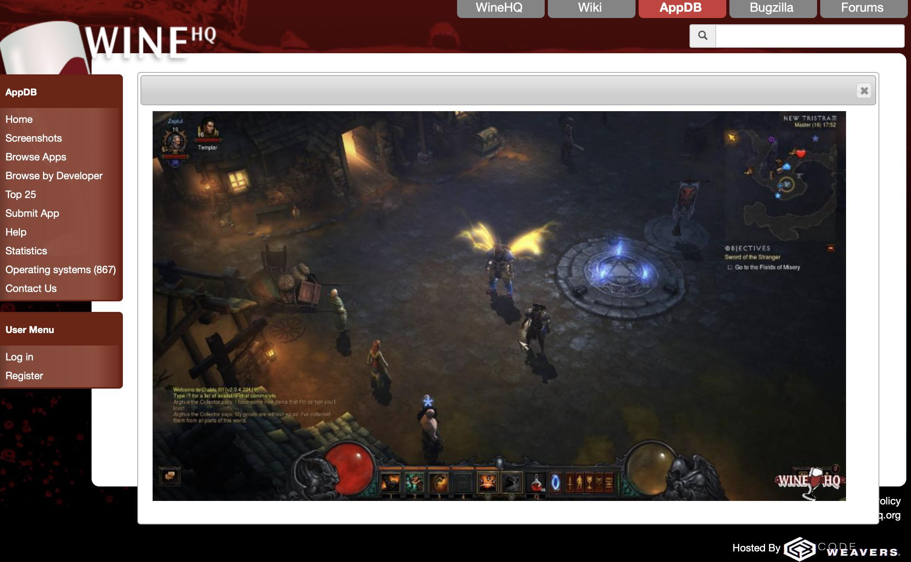
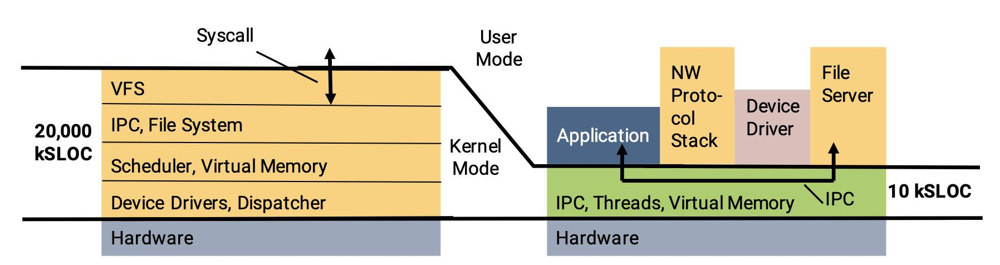
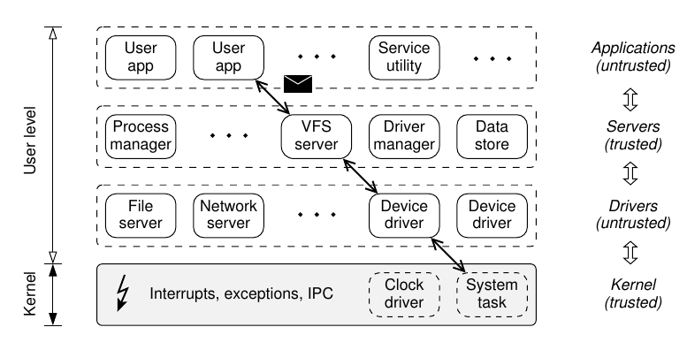

Overview
复习
- 操作系统设计：一组对象 + 访问对象的 API
- 操作系统实现：一个 C 程序实现上面的设计
本次课回答的问题
- Q: 操作系统到底应该提供什么对象和 API？
本次课主要内容
- Micro/Exo/Unikernel
操作系统里到底该有什么？
2022.4.25 小学生又出新产品了
这次支持了分页和图形界面 (似乎是搬运了一些素材？)
- L2: tty 和 fb 驱动 (tty 是逐像素绘制的)
- L3: 9 个系统调用 (kputc, fork, wait, exit, kill, mmap, ...)

莫要慌：你们是大学生啊 😂
上课谈的不能称为真正的 “操作系统”
发扬大学生 RTFM & RTFSC 的光荣传统
- 能够意识到这一点的中/小学生就能成为顶级的程序员
The Open Group Base Specifications Issue 7 (2018 Ed.)
- XBD: Base Definitions
- XSH: System Interfaces
- XCU: Shell & Utilities
- XRAT: Rationale
- 这是非常关键的：不仅告诉 “是什么”，还有 “为什么”
- 和 POSIX 相当不同的一组设计
- “工业” v.s. “黑客” (PowerShell v.s. bash)
冰山的一角
API 意味着可以互相模拟
- Windows Subsystem for Linux (WSL)，大家都在用
- WSL1: 直接用 Windows 加载 ELF 文件
- WSL2: 虚拟机
- Linux Subsystem for Windows (Wine)

冰山的一角 (cont'd)
操作系统默默帮你承载了更多
- Operating system transactions (SOSP'09)
- 在 Linux 2.6.22 上实现
- 对 Kernel 破坏性太大，不太可能维护得下去
- Windows KTM, since Windows Vista (2007)
- 对，你没看错，是 Windows Vista
- 世界最强、骂声最大，悄然落幕
如何迈出走向操作系统的第一步？
理解老系统是如何实现、遇到怎样的问题
- xv6; 偶尔讲一些新特性
- 然后：RTFM, RTFSC
Microkernel
Less is More
公理：没有完美的程序员。
推论：
越小的系统，错误就越少。
C 作为一个有 Undefined Behavior 的语言，是复杂系统的灾难
- Signed integer overflow (Linux Kernel 使用了 -fwrapv)
- Data race
- Memory error
- libpng 高危漏洞 (一张图偷走你的密码)
- 整数溢出后空格 keyword 读取进程数据
- libpng 高危漏洞 (一张图偷走你的密码)
Microkernel (微内核) 应运而生
把尽可能多的功能都用普通进程实现 (失效隔离在 “进程” 级)
试着用普通进程做更多的事
sh-xv6.c 到底执行了哪些 “就算丢给另一个进程，还得请求操作系统” 的操作？
- 进程 (状态机) 管理似乎绕不开
- fork/spawn; exit
- 加载器 loader-static.c (execve) 似乎不必要
- mmap 似乎绕不开
- 终端 (tty) 可以放在进程里
- 让 “驱动进程” 能访问 memory-mapped register 就行
- 或者提供一个 mmio 系统调用
- 文件系统 (open, close, read, write, ...)
- 进程只要有访问磁盘的权限，在磁盘上做个数据结构不成问题
Microkernel (微内核)

微内核 (microkernel)
- 只把 “不能放在用户态” 的东西留在内核里
- 状态机 (拥有寄存器和地址空间的执行流)
- 状态机之间的协作机制 (进程间通信)
- 权限管理 (例如设备访问)
- 赋予进程最少的权限，就能降低错误带来的影响
Minix3 Architecture

- Minix2 更极端一些，只有 send 和 receive 两个系统调用
- 主要用来实现 RPC (remote procedure call)
- 操作系统还是操作系统，但跨模块调用会跨越进程边界
再向前走一小步
听说 “微内核” 有更好的可靠性？
- 那我们能不能证明它真的 “十分可靠”？
- 对于任何输入、任何执行路径
- 没有 memory error
- 不会 crash……
seL4
- 世界上第一个 verified micorkernel
- Whitepaper (初学者友好，十分推荐)
- Comprehensive formal verification of an OS microkernel (TOCS'14)
- 有一个非常优雅的 capability 机制
seL4 证明思路
首先，用适合描述行为的语言建一个模型 (seL4 有两层模型)
def rr_sched(cpu):
cpu.threads = cpu.threads[1:] + cpu.threads[:1]
assert anything_you_need
return cpu.threads[0]
再写一份 C 代码
- thread-os.c
- 我们就有了两个状态机 (Python 和 C 代码的形式语义)
就可以去证明操作系统的 functional correctness 啦！
证明两个数学对象 (状态机) 可观测行为的等价性 - 剩下就是去解决遇到的各种技术问题 (更重要的是
敢不敢去做 )- Non-trivial; 但也不是 “神来之笔” (incremental work)
我们置身的时代
Exokernel
“The essential observation about abstractions in traditional operating systems is that they are overly general.”
操作系统就不应该有任何策略
- 只应该管硬件资源的最小虚拟化
- Expose allocation, expose names, expose revocation
- 内核里甚至连 “进程” 的概念都没有，只有时间片
- 调度策略完全在 libOS 中实现
- 内核里甚至连 “进程” 的概念都没有，只有时间片
- Exokernel: An operating system architecture for application-level resource management (SOSP'95)
Unikernel: libOS 的复活
今天我们有虚拟机 (和硬件虚拟化) 了
- 为什么不直接让 Lab2 跑应用程序呢？
- 应用代码直接和 klib, AbstractMachine, Lab 代码静态链接
- 任何操作 (包括 I/O) 都可以直接做
Unikernel: 内核可以非常小 (应用不需要的特性都直接删除)
- includeOS (C++); runtime.js (JavaScript); Mirage (OCaml)
- Unikernels: The rise of the virtual library operating system (CACM'14)
- Unikraft: Fast, specialized unikernels the easy way (EuroSys'21, Best Paper Award 🏅)
总结
总结
本次课回答的问题
- Q: 操作系统到底应该提供什么对象和 API？
Take-away messages
- “操作系统” 的含义随应用而变
- 可以大而全 (Linux/Windows API)
- 可以只有最少的硬件抽象 (Microkernel)
- 可以没有用户态 (Unikernel)
- 互联网时代
- 从井里走出去：RTFM, RTFSC
- 然后去改变这个世界